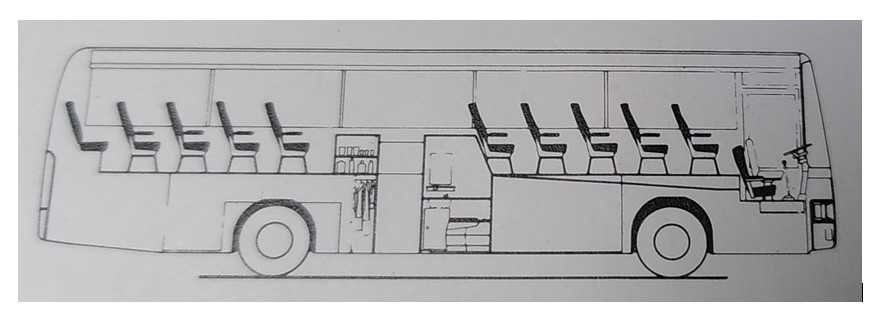

Voordat ik jullie meeneem in mijn project, zal ik nog even kort toelichten waarom ik eigenlijk een bus heb gekocht. Er is namelijk nog wel een en ander aan vooraf gegaan.
Woningmarkt
Gezien de woningmarkt in Nederland momenteel ronduit belachelijk is, is het kopen van een woning erg lastig. Als alleenstaande met een studieschuld is het gewoon onmogelijk. Het huren van een woning is ook geen gesneden koek. Als je geluk hebt kun je binnen redelijke tijd aanspraak maken op een sociale huurwoning. De andere optie is de particuliere huursector, waar je gewoon uitgekleed wordt. Het geld zie je bovendien nooit weer, zoals dat (deels) wel bij een koophuis het geval is.
Wonen op een schip
Ik houd graag van out of the box denken en dacht: zijn er geen andere opties? Ik ken mensen die (deels) leven op een zeilboot en dat inspireerde me. Ik begon me te verdiepen in het wonen op een schip. Ik heb gekeken naar woonboten, zeilboten en motorboten. Ik zag het ergens wel voor me, maar er zitten een aantal nadelen aan het kopen van en het wonen op een schip. Zo ben je bijvoorbeeld minder mobiel dan een wegvoertuig. Daarnaast heb je te maken met relatief veel onderhoud, waarvoor het schip van tijd tot tijd uit water moet. En dat kost geld. Maar wat het plan definitief in de doofpot stopte, is het regelen van een vaste ligplek. Je bent afhankelijk van een vaste ligplaats en deze zijn schaars en duur (rond de stad). Dit maakt het plan voor mij oninteressant.
Foto’s van de motorklipperaak "Metamorfose"
Hieronder een aantal foto's van de motorklipperaak "Metamorfose", die ik heb bekeken en waar ik een stukje in mocht varen van de eigenaar.
Skipper Felix aan het stuur van de Metamorfose :). Bijzonder sturen, een stalen schip van 18,56 meter lang, 32 ton zwaar en zonder boegschroef.De kajuit.Gedateerde keuken.De woonkamer, gedateerd, maar dat valt te verbouwen. Veel licht, genoeg ruimte en stahoogte.4 slaapkamers (hutten) met maar liefst 8 slaapplaatsen. Veel potentiële ruimte met een andere indeling.
Wonen in een vrachtwagen
Na de oriëntatie op schepen begon ik me te oriënteren op vrachtwagens. Daar zitten een aantal voordelen aan ten opzichte van een schip. Zo zijn ze een stuk goedkoper, ben je niet afhankelijk van ligplaatsen en ben je een stuk mobieler. Daarnaast heeft een vrachtwagen een recht-toe-recht-aan laadbak die je eenvoudig kunt isoleren en inrichten. Ook zijn alle kanten goed bereikbaar en dat maakt het onderhoud makkelijker. Ik was al een beetje aan het spelen met een indeling in mijn CAD programma:
3D model gemaakt in CAD.
Maar ik liep steeds tegen dezelfde beperking aan: ruimtegebrek. Ruimtegebrek? Bij een vrachtwagen? zul je misschien denken. Maar mijn plan is niet om er af en toe mee op vakantie te gaan. Mijn plan is om er in te gaan wonen. En als je ergens in wil wonen, dan moet je je niet opgesloten voelen. De één heeft minder ruimte nodig dan de ander, maar ik wist dat ik hiermee niet tevreden zou zijn. Daarbij speelt de cabine van de vrachtwagen een grote rol. Deze is gescheiden van de laadbak, wat ten koste gaat van de ruimte. Een doorgang van de cabine naar de laadbak maken zou misschien kunnen, maar dit zou wel een technische uitdaging worden. Was er maar een voertuig waarbij het interieur uit één grote ruimte bestaat....
2 - Het begin: de Marktplaatsadvertentie
17 oktober 2023
Het begin... de Marktplaatsadvertentie. Ik kwam bij toeval een advertentie tegen waarin een bus werd aangeboden. Ik dacht dat is grappig... Het ging om een Van Hool T815 touringcar/bus uit 1982. Zie hier de foto's van de Marktplaatsadvertentie:
De buitenkant
De binnenkant
Welkom, kom binnen...De cockpit.Binnen waren nog 8 van de 48 stoelen over, welke voorin de bus tegenover elkaar waren gemonteerd. Achterin de bus waren stapelbedden gebouwd van houten balken en stalen bedbodems. Verder zijn te vinden: een koelkast zonder deur, vol met water en flessen drank en een oud keukenblok.De kilometerteller telt maar liefst 692.832 gelopen kilometers. Voor een bus niet gek, omdat ze goed en degelijk ontworpen zijn.Prima profieltje, nagenoeg nieuwe banden.Het kloppend hart van de Van Hool, de M.A.N. (Maschinenfabrik Augsburg-Nürnberg Aktiengesellschaft) met 6 cilinders in lijn, 11410cc en turbo, goed voor een vermogen van 280 PK. De motor drijft met behulp van v-snaren de radiator (links), de compressor voor de luchtvoorziening van de bus (direct rechts vd motor) en de airco-compressor (helemaal rechts) aan.
3 - De bus bekijken
21 oktober 2023
Na contact met de eigenaar reisde ik met paps naar Haarle (bij Raalte) af om de bus te bekijken. Op het adres troffen we een boerenbedrijf aan. De eigenaar bleek een jongeman te zijn die de bus met zijn vriendengroep heeft gekocht om ermee naar de Zwarte Cross te gaan. Na 2 jaar vonden ze het mooi geweest en met geen andere plannen voor de bus, besloten ze hem te verkopen.
Wat opviel was dat de bus voor zijn leeftijd technisch niet heel slecht oogde. De buitenkant is gemaakt van aluminium, dus heb je daar minimaal te maken met corrosie. Binnen leek het ook redelijk netjes en origineel, maar de jongens hadden er een "indrukwekkende" constructie van stapelbedden ingebouwd met CLS en oude metalen bedbodems. Deze constructie was vakkundig overal en nergens aan de bus vastgeschroefd met spaanplaatschroeven. In alle soorten en maten.
De onderkant kon ik niet heel goed beoordelen, daarvoor zou je hem op de brug moeten zetten. Maar je gaat toch ook een beetje af op de algemene indruk die je krijgt. Bovendien was het Belgische Van Hool een topmerk onder de bussen- en opleggerfabrikanten, dus dat voelde goed.
Ik heb die dag geen foto's gemaakt. We hebben wel een rondje gereden in de bus. Wat rijdt dat fantastisch! Omdat je als bestuurder vóór de voorwielen zit (zie foto), heb je het gevoel alsof je over de weg zweeft. Erg leuk. Verder is de bus natuurlijk lucht geveerd, wat bijdraagt aan een comfortabele rit.

Als bestuurder zit je vóór het voorwiel (en hoog boven de grond).
4 - Verkocht!
12 november 2023
Na het bekijken van de bus op 21 oktober heb ik bij de eigenaar aangegeven dat ik een paar dagen nodig heb om wat meer informatie over te bus op te zoeken. Onder andere heb ik contact gehad met de fabrikant Van Hool zelf. Zij waren tot mijn grote dank bereid om elektrische schema's voor dit type bus met mij te delen.
Verder heb ik onder andere onderzocht wat de mogelijkheden en regels zijn omtrent campers. Natuurlijk goed om te weten vóór je een touringcar aanschaft.. Ik vond een lijst van vorige eigenaren op het internet, met ook de overschrijvingen en herkeuringen. Hieruit kon ik opmaken dat de bus al tweemaal eerder op camperkenteken heeft gestaan. Goed om te weten.
Al met al kreeg ik er steeds meer vertrouwen in dat dit een kansrijk project is. "Ik ga hem kopen" dacht ik op een bepaald moment. Na een bod van mij en een tegenbod van de verkopende partij kwamen we tot een deal. We spraken ook meteen af: zij halen de matrassen eruit én tanken hem af.
Op zondag 12 november reisde ik met pap en topper Stijn weer naar Haarle. Na het tellen van het geld en het bespreken van de overschrijving (zondag loketten niet open en online overschrijven werkte niet op dat moment), de hand schudden en...:
Nu de bus terugrijden naar huis. Met een maximum van 8 stoelen mag je een bus besturen met een vrachtwagenrijbewijs (vandaar het aantal overgebleven stoelen). Pa heeft een vrachtwagenrijbewijs en kon dus de bus naar huis rijden.
Stijn reed achter ons aan.Even wat eten onderweg, ik trakteer!Even poseren bij mijn nieuwe aankoop! Wat een ding nie?Thuis heb ik de bus meteen getankt om een inschatting te krijgen van het verbruik. Resultaat: 82.5 km/22.52 L = verbruik van 1 liter diesel op 3.66 kilometer.Rondleiding onderweg!Thuis. Tja... en dan besef je pas hoe groot zo'n bus nu echt is. Het krijgen van de draai was geen eenvoudige taak. Na het verwijderen van een deel van het hek paste het maar net.. fiew...Na wat manoeuvreerwerk staan we op plek! Fiat Ducato camper rechts ter vergelijking van de grootte :)Hij rookt wel een "beetje". Daar kijken we later even naar. Maar wat loopt die 6 cilinder mooi!!! Als muziek in mijn oren :).
5 - Het sloopwerk
13 november 2023
De eerste stap was om alle ouwe meuk en wat niet meer nodig is uit de bus te slopen. Ik had eerst nog niet helemaal bedacht tot hoe ver ik de bus ging strippen, maar al snel besloot ik dat ik de bus geheel ging strippen. Een boel werk, maar zo voorkom je verborgen gebreken en kun je met een schone lei beginnen. Dat voelt gewoon goed.
Tijdens het slopen kwam ik er achter dat het materiaal dat gebruikt werd om het interieur te bouwen ook erg zwaar was. Gezien ik de nieuwe indeling zal bouwen met lichter materiaal dan het originele, resulteert dit ook nog eens in een flinke gewichtsbesparing.
Slopen van de bedbodems
De beginsituatie.Eerst maar eens die domme bedbodems eruit.. Ze hadden ze overal en nergens vastgeschroefd. Door het dak, door de muren en door de vloer. Torx-, kruiskop- en gleufkopschroeven, maar ook de nodige houtdraadbouten mochten niet ontbreken.. Het was een mooi schroevenfeest.De bedbodems en de houten constructie gedemonteerd. Dat geeft al heel wat ruimte. Het hout komt later goed van pas (meenemen!). De bedbodems leveren bij de oudijzerboer een leuk zakcentje op (meenemen!).De koelkast leegpompen die de jongens met water hadden gevuld. De buit: ongeopende(!) flessen drank. Niet mijn smaak, maargoed :)Het hokje van het toilet.Het trappetje en de zijdeur naast het toilet.
Overzicht
26 november 2023
Goed, de bedbodems zijn eruit. Wat hebben we tot zover?
De achterkant van de bus, gezien vanaf het midden. Zie ook de aluminium gleuven waarin de stoelen gemonteerd kunnen worden.De bus gezien vanaf de achterkant.Onder de inspectieluiken in de vloer gaat onze krachtpatser verschuild.
Slopen van het plafond
28 november 2023
Hier zijn pa en ik bezig met het slopen van de luchtkanalen. Hieruit stroomde warme of koude lucht naar beneden naar de passagiers. Dit was door de passagiers zelf te regelen. Van Hool had dit goed bekeken. Hierover later meer.
Het grootste gedeelte van het interieur was bekleed met grijs tapijt. Het had zijn beste tijd wel gezien. God mag weten wat er allemaal mee is gebeurd. Het maakte het slopen er soms niet makkelijker op. Wanneer je het losrukte kwam er ook veel stof vrij. Niet zo best voor je longen!
Een goed stofmasker is dan ook een fantastische investering! Op het masker zit een nieuw filter, rechts een vies filter.Eem de muts goed doen.We doen net of we het leuk hebben!Er wordt wel hard gewerkt hoor! Een en ander voor het gemak even in kleinere stukken zagen.Ik heb me er over verbaasd hoeveel materiaal je uit zo'n bus sloopt! Binnen de kortste keren lag de bus weer vol met troep en moest er eerst opgeruimd worden.Minimaal 5 van deze bussen vol troep heb ik naar de stort gebracht! Bovenop de bus ligt sneeuw. Soms was het fris tijdens het slopen. Maar na 10 minuten slopen had ik het wel weer warm...Opgeruimd staat netjes.Het plafond is nagenoeg kaal. Hier vanuit achter in de bus gezien.Van voor in de bus gezien. Trouwens, wees geen dief van je eigen portemonnee en koop geen verhuisdozen van de Action. Wat een kutdingen. Het karton is veel te dun. De bodem laat je zonder pardon in de steek en je mooie spulletjes liggen op de vloer..
Slopen van de wanden en de vloer
Na het slopen van het plafond waren de wanden en de vloer aan de beurt. Deze zijn deugdelijk geconstrueerd door Van Hool en vergden enige moeite om eruit te slopen. Uit de wanden kwam een heleboel aluminium, goed voor een zakcentje bij de oudijzerboer (meenemen!).
Een deel van het ingeleverde aluminium.Een deel van het ingeleverde staal.Achterin de bus.Vanuit achter in de bus gezien.De vloer in het midden eruit. Hieronder lopen de leidingen en slangen van voor naar achteren toe. Denk aan koppelingbediening, luchtleidingen, brandstofleidingen, cv-leidingen, enzovoorts.De vloer in de cockpit eruit. De bestuurders- en bijrijdersstoel heb ik hier ook gedemonteerd. Onder de vloer ligt het reservewiel.Het slopen van de overige vloerplaten schiet ook al mooi op. Het gaat wel moeizaam. Hier is de achterkant van de bus te zien.Vloer achter het oude toilet eruit.Onder de vloer ontdekte ik een boilervat. Hierover later meer in een nieuwe post.
Slopen van het toilet
13 januari 2024Tijd voor het toilet om te gaan. Ik zou het hokje eerst behouden, maar later besloot ik dat ik ook hier beter met een schone lei kon beginnen.Leuk detail: door het toilethokje liep een afvalbuis van boven naar beneden. Men kon vanuit de bus én vanuit het toilet afval in een gat in de muur deponeren. Het afval werd beneden opgevangen in een uitneembare bak. Deze kon dan geleegd worden en weer teruggeplaatst.In de gaten waar ooit de drankjes stonden vond ik de eerste schat (chips en muntgeld)! (meenemen!). Achter het toilet ontdekte ik nóg een ruimte met méér verborgen schatten! Deze keer tampons, maandverband en wc-papier (meenemen!).Hier heb ik de achterkant van het toilethokje gesloopt.De reclamesticker op de deur heb ik voorzichtig verwijderd. Ik vind hem leuk, dus die bewaar ik. Ik weet nog niet wat ik er mee doe.Het toilet gesloopt, dat was een boel werk.. De pot er ook afgehaald. Gelukkig kwam er geen stank uit de vuilwatertank.Tenslotte de vloer van het toilet gesloopt.
Na het slopen van het toilet besefte ik ook dat mijn oorspronkelijke plan voor de badkamer niet mogelijk is. Ik wou namelijk een badkamer creëren met de douchecabine, wastafel én het toilet in één ruimte. Hiervoor zou ik de originele toiletruimte moeten verbreden, maar daarbij kom je de ruggengraat van het chassis van de bus tegen. En daar kun (en mag!) je niet de flex in zetten..
ASBEST?
23 januari 2024
Achterin de bus, waar de achterbank ooit zat, zat een stalen plaat. Ik besloot deze plaat te verwijderen omdat ik het idee had dat achter de plaat loze (en dus benutbare!) ruimte zat. Dat was ook het geval. Ik zette dus de flex erin, maar terwijl ik aan het slijpen was merkte ik dat er een soort witte stof in de lucht vrij kwam. Dat was niet het staal...
Achter de stalen plaat zat een soort vezelige plaat die je in stukken eraf kon breken.
Het kwartje viel vrij laat voor mij, maar opeens dacht ik: vezelachtige plaat? Wit? Kuuut, is dit geen asbest? Een second opinion van paps resulteerde in hetzelfde oordeel: asbest. Ik droeg voor het grootste gedeelte wel mijn mondmasker, maar de filters die erop zitten zijn niet helemaal geschikt voor dit soort stoffen, kwam ik achter... Fijn.
Doordat ik een video keek over twee mensen die een stalen schip restaureren (voor de liefhebbers:FlyingConey) wist ik van het bestaan van asbest-testkits. Ik besloot ook zo'n set te bestellen en het vreemde materiaal te testen.
Je krijgt een uitgebreid pakket waarmee je een stuk materiaal kunt opsturen naar het lab voor analyse. Op de foto heb ik al een stukje "asbest" in het zakje gedaan. Deze heb ik in de brievenbus gedaan en dan is het een kwestie van wachten...
De uitslag van de test kreeg ik een aantal dagen later op de mail (zie foto). "Geen asbest" was de conclusie. Toch voelde ik me nog niet helemaal gerustgesteld. Ik geloofde het eigenlijk niet. Het materiaal lijkt namelijk sprekend op asbest. Ik heb het bedrijf van de test gebeld met de vraag of de uitslag wel klopt. De man aan de telefoon zei: "ja ik ben ook verbaasd want ik dacht ook dat het asbest is". Lekker geruststellend... Hij zou het nog eens navragen. Het antwoord bleef hetzelfde, geen asbest. Nouja dan moeten we daar maar vanuit gaan dan. Waarschijnlijk is het gips. Weer door!
Hier ben ik al een heel eind met het verwijderen van de stalen plaat. Zoals je kunt zien zit er achter de plaat een holle ruimte. De nieuwe wand kan gewoon recht/verticaal worden gemaakt, zodat de ruimte in de bus groter wordt.De plaat is er helemaal uit. In de hoeken van de bus zit roest. Dit komt omdat de toplichtrubbers (op alle vier bovenhoeken vd bus, zie pijlen op onderstaande foto) lek zijn. Zo kan er water naar binnen lopen. hierover later meer.De locaties van de toplichten. De leuke groene oldtimer is een NSU van oud-collega Roy, die af en toe even komt koekeloeren.
Onder in de bus
9 januari 2024
Ook onder in de bus (of begane grond?) ben ik druk geweest met slopen.. Ook hier was het doel weer: helemaal strippen. Dit was ontzettend veel en zwaar werk. Veel onderdelen waren geschroefd én vastgekit, waardoor het verwijderen erg lastig was. Maar het is gelukt!
De luiken worden ondersteund door gasveren (zoals de kofferbakklep van een auto), maar sommige zijn niet zo best meer of ontbreken. Hierdoor blijven de luiken minimaal of helemaal niet openstaan. Vandaar de houten balk eronder. Uiteindelijk vervang ik de gasverenDe onderste ruimte bestond uit 4 ruimtes van verschillende groottes, gescheiden door houten wanden. Ik heb alles eruit gesloopt.
In het linkervak heeft vermoedelijk een apparaat gezeten, omdat er een vierkant gat in de vloer zit en er een uitlaat vandaan loopt. Helemaal achterin stonden 2 gasflessen in een gasbun. Zat er een gasboiler..? Deze bun heb ik er uit gesloopt. Ik maak er later een nieuwe in voor de gasflessen voor het koken.
In het middelste vak ligt de vuilwatertank en zat het opvangbakje voor de afvalgaten die ik eerder benoemd heb.
Het rechtervak was onderverdeeld in twee kleinere vakken. Het kleine vakje links was voor bergruimte. Het grotere vak bood een slaapplaats voor de 2e bestuurder! Zie ook het raampje in het luik. Tegenover het toilet zat een deurtje die toegang gaf tot de ruimte. De persoon in de slaapruimte kon de deur op slot doen, een lampje aan- en uit doen en beschikte over een Philips bedrade telefoon (voor contact met de bestuurder?).
Hier een foto vd sloopwerkzaamheden in het linkervak. Achterin zit nog een groot deel van de gasbun op zijn plaats. Het wordt snel donker in december...Een andere foto van het rechtervak zoals het was. Helemaal rechts staat de luidspreker die door de vorige eigenaar achter is gelaten. Na een kleine reparatie werkt deze weer en nu gebruik ik hem als klusluidspreker!De luidsprekers in de behuizing waren allemaal in orde. Het plastic van de tweeter was alleen gebroken zodat hij los hing. Deze heb ik gelijmd en klaarie.Nadat onder in de bus ruimte was gecreëerd door het slopen, kunnen daar mooi wat spullen staan. De stoelen bijvoorbeeld.
Zo rond dit punt begon ik me wat meer te richten op herstel- en bouwwerkzaamheden. Met andere woorden, het einde van het slopen kwam eindelijk in zicht en het bouwen kon langzaam beginnen! Gaande weg moet er nog wel e.e.a. gesloopt worden, maar het meeste zit er nu op!
6 - Bezoek aan Stichting Veteraan Autobussen
3 december 2024
Oké, dit was écht leuk! Doordat ik zat te neuzen op internet om informatie te vinden over mijn bus stuitte ik op de website van Stichting Veteraan Autobussen. De Stichting Veteraan Autobussen is een stichting die historische Nederlandse autobussen onderhoudt en inzet voor evenementen. De stichting heeft een aantal vestigingen verspreid over het land. Toevallig heeft de stichting net zo'n bus als ik in beheer, deze is alleen 5 jaar jonger:
Ik dacht: een bezoek aan deze stichting en deze bus kan me veel waardevolle informatie opleveren. Ik heb contact gezocht met de stichting, welke in Apeldoorn bleek te zitten (mooi dichtbij!). Tot mijn vreugde werd ik van harte uitgenodigd om eens te komen kijken. Hieronder wat foto's die ik die dag gemaakt heb.
Hun exemplaar ziet er voor haar leeftijd nog prachtig uit. Maar deze bussen worden dan ook liefdevol onderhouden.De cockpit.Het interieur! Kijk hoe het er vroeger uit heeft gezien! Wat een verschil. Nette bus hoor voor die tijd.Een paar foto's gemaakt van het technische gebeuren. Handig om te weten voor het herstellen van de techniek in mijn bus. Hier de knopjes bij het stuur voor het bedienen van alle deuren, lampjes, ventilatoren enzovoorts.Ook van de motorruimte valt veel te leren over hoe dingen horen te zitten.
We werden zelfs getrakteerd op een ritje door een buschauffeur!
Bonus foto's van een van de nog oudere bussen (Leyland meen ik):
7 - Nieuwe busindeling
1 januari 2024
Over de indeling van de bus heb ik een tijdje nagedacht. Ik denk dat ik het als volgt ga doen. De slaapkamer achterin. De keuken komt er tegen aan met een scheidingswand. De scheidingswand wil ik opzij kunnen schuiven (schuifdeur). Even kijken of dat gaat lukken, anders wordt het een "normale" openslaande deur. De eethoek tegenover de keuken, met de originele bus stoelen. Het toilet komt ongeveer tegenover de trap bij de zij uitgang, waar het toilet zat. Waar het toilet zat maak ik dan de douche cabine. Ik wou een volwaardige badkamer maken met de douche en het toilet in één ruimte, maar dat past niet. Ergens halverwege wil ik een houtkachel plaatsen. Voorin de bus komt dan de zithoek met (hoek-)bank, televisie enzovoorts. De cockpit en de rest van de bus scheid ik ook met een scheidingswand. Dit omdat de cockpit moeilijk te isoleren is en ik zo een "rechte bak" heb om te isoleren. Dat maakt een en ander makkelijker. Zie foto.
8 - Elektra
16 februari 2024
Als onderdeel van het slopen heb ik ook gekeken naar de elektra van de bus. En geloof me, er zit een boel elektra in zo'n bus... Eerste stap was om al het spul wat duidelijk overbodig is eruit te slopen. Dit valt niet mee, gezien de vorige eigenaren er ook aan gerommeld hebben.
Een voorbeeld van het oerwoud aan kabels toen ik ermee van start ging. Of zoals pap en ik het noemen: kabelarij.Nadat ik allerlei oude troep verwijderd had lijkt het al overzichtelijker. Dit is dezelfde ruimte als die op vorige foto. Hier heb ik mantel van de hoofdkabelboom losgesneden om de verschillende kleuren te kunnen herleiden.De zekeringkast... wel origineel gelukkig!De accu's (2x 12V).De accu"lade" heb ik meteen even een lik verf gegeven! Hier in de menie.Hier in zwarte hamerslag.Sommige kabels waren lastiger door te knippen dan anderen...
Op het dashboard zitten een boel knopjes en controlelampjes voor de originele aansturing. Denk hierbij aan het pompje van het toilet en de kraan, de verlichting, de verwarming maar ook de ruitenwissers, enzovoorts. Veel van het oude systeem is niet meer nodig. De bus heeft natuurlijk een heel ander doel gekregen.
Dashboard met alle knopjes.
Maar welk kabeltje of knopje doet wat?
De werking van alle knopjes proberen te achterhalen en dit meteen noteren.Later heb ik het stuurwiel eraf getrokken om beter bij de kabels te kunnen.
We zijn er nog niet.. ondanks dat ik al heel veel kabels heb verwijderd, blijft er nog een heel aantal over:
Achterkant dashboard.
Dit hoofdstuk zal ik gaandeweg aanvullen, gezien het een langlopend proces is om de elektra in orde te brengen.
9 - Webasto standkachel reviseren
18 maart 2024
Wat is een standkachel?
Een standkachel is een kachel die diesel verbrandt om water op te warmen voor de verwarming van een ruimte. In combinatie met een boilervat (zie tweede foto) kan er ook warm douchewater bereid worden. Je kunt het vergelijken met een CV-ketel in een woning.
In mijn bus trof ik een Webasto standkachel aan. Webasto is een Duitse kachelfabrikant. Hun kachels staan bekend als (een van de) betrouwbaarste kachels op de markt. Ze zitten geniaal in elkaar. Simpel maar effectief.
Zoals ik eerder had vermeld had ik ontdekt dat er een boilervat in de bus is geplaatst (zie foto). Hiermee kan icm met de standkachel warm water worden opgeslagen voor douchen/warm water. Naast de aansluiting voor de standkachel, zit er ook een elektrisch verwarmingselement in, zodat het water eventueel óók elektrisch (met stroom van de zonnepanelen óf "wal"stroom) verwarmd kan worden. Een zeer nuttige vondst!
Het boilervat onder de vloer.De standkachel van de bus, door pap voorzien van een nieuwe grijze verflaag.
De revisie
Maar zo mooi gerestaureerd was hij nog niet toen ik hem aantrof. Zo zagen de kachel en de kachelruimte eruit in het begin:
Dit model standkachel is al wat ouder en ik had in het begin geen idee of hij het nog zal doen. Mijn gevoel zei dat hij weer zou werken, dus ben ik aan de slag gegaan.
De branderkop, die pap heeft schoongemaakt en heeft voorzien van een nieuwe spuitmond (voor het vernevelen van de diesel).De elektromotor voor de dieselpomp en de interne ventilator (voor het aanvoeren van zuurstof voor de verbranding en het uitblazen van de rookgassen).Nieuwe SKF lagertjes voor de pompmotor.De oude lagertjes.Het asje.Voordat ik de lagers kon vervangen moest wel eerst de hele motor uit elkaar...Branderkop klaar, met nieuwe kabels. Ook de elektrodenafstand heb ik afgesteld (voor het ontsteken van de diesel na inspuiting).De uitlaat is gerepareerd (o.a. gelast) en in zilvergrijs gespoten:
Reparatie van de vloer
24 maart 2024
Omdat water door een aantal gaten naar binnen kon komen was het eerst zaak om dit te herstellen:
Eén van de gaten. Waar zou dit voor hebben gediend vraag ik me af?Een ander gat. Zie óók het slechte plaatwerk naast de koker.Een groot rond gat -voor een uitlaat geweest?- en een aantal kleinere gaten dichtgelast.De UNP waar de Webasto op gemonteerd wordt ingeslepen, dichtgevouwen en dicht gelast.De vloer helemaal dichtgelast (muv het gat voor de uitlaat van de kachel) en klaar voor een likje verf.De vloer in de verf! Dat knapt op!
Monteren en aansluiten van de kachel
7 april 2024Hier heb ik de kachel tijdelijk gemonteerd om te kijken of alles past. Vloer hier nog niet geverfd.Hier heb ik de kachel definitief gemonteerd. De kabels moeten hier nog vernieuwd worden. Ze waren gecorrodeerd en maakten niet of nauwelijks meer contact.Hier de kachel volledig aangesloten en voorzien van nieuwe kabels en stekkers.De waterpomp weer gemonteerd op een afstandsblokje gemaakt met de 3d printer.Van dichterbij. Zie ook het Webasto dekseltje, daar heb ik even een nieuwe voor geprint met de 3d printer. De oude was beschadigd. Ik kon het niet laten om het "Webasto" logo erin op te nemen :). De pvc bochten vervang ik later door aluminium bochten.Het beugeltje voor de elektronische stuurunit van de kachel brak helaas af.Gelukkig is mijn oom een uitstekende lasser en had hij geen moeite met het dunne materiaal!Hier de stuurunit op zijn plaats.Aan de aanvoerleiding heb ik een manometer (om de druk af te lezen) en een vulpunt toegevoegd.De retour-dieselslang heb ik vervangen voor een nieuwe, omdat de oude lekte.Het voegt niet veel toe maar ik kon het niet laten om even de handwieltjes van de afsluiters in kleur te spuiten. Rood=warm Blauw=koud.Hier miste überhaupt een handwiel, maar pap had nog een mooie met dezelfde asmaat. Bedankt pap!Hij werkt! Het gebrom van de brander is het beste te horen met koptelefoon. Zie ook de rook die omhoog komt. Die is klaar om straks de bus van warm water te voorzien!
Kiekje
Wat een gekke schroevendraaier?
10 - De vloer
12 juni 2024
Met het bouwen van de vloer heb ik ook een begin gemaakt. Voordat de nieuwe vloerplaten gemonteerd kunnen worden moet eerst de isolatie aangebracht worden dat er onder komt. Hiervoor moest ik eerst wat roest plekjes op het frame behandelen en de frames waar de ondervloerkachels in zaten weghalen.
Vóór het weghalen van het frame van de ondervloerkachel.Het frame er tussen uit. Je kunt de leidingen voor de warm wateraansluiting nog zien zitten. Deze heb ik er later ook uit gehaald. Later breng ik ze opnieuw aan.Hier mijn eerste poging tot het maken van een frame waarin de isolatie komt te zitten. Mijn eerste plan was om alles te monteren met montagekit.Ik kwam er snel achter dat het frame lager moet, want de isolatie steekt te ver uit. Je kunt de isolatie gemakkelijk indrukken, maar isolatie isoleert juist door de lucht tussen de vezels.Nog een extra latje tegen het doorhangen van de isolatie.Hier zit het eerste stukje er in. Dit is veel meer werk dan ik dacht...Hier ben ik al een stukje verder.De slechte plekken van het staal heb ik behandeld met menie.De ondersteuning die ik eerst had gemaakt tegen het doorzakken van de isolatie bleek niet voldoende, dus ik heb ik later kippengaas toegevoegd.Hier heb ik één deel klaar. Als je goed kijkt zie je ook dat ik inmiddels schroeven heb gebruikt. de montagekit hechtte niet goed op het staal omdat ik het niet goed schoon kon maken. Soms vind je gaandeweg een betere en snellere manier om iets te maken...Mooi verzonken :) Zo kan de vloerplaat straks mooi vlak liggen.Nu de andere kant. Hier ben ik bezig met de roest op het frame te verwijderen en een paar lassen vlak te slijpen zodat ook dit in de menie kan.Méér slijpen en schuren.Méér menie.Ook hier een framepje in maken voor de isolatie. Je kijkt hier op de achterste wielkast, waar de achterwielen zitten (DUBBEL-LUCHT JONGEEE).Gaas plaatsen.Glaswol plaatsen.
Voordat ik de isolatie bij de hoek bij de deur kon plaatsen moest ik eerst een van de kokers repareren omdat ik er tijdens de sloop per ongeluk met mijn cirkelzaag dwars doorheen heb gezaagd lol. Zie bovenstaande foto.
De snede in de koker weer dichtgelast.En daarna in de menie.Toegang voor het verven via het luik buiten. Het scharnier van het luik is niet meer, dus dat moet gerepareerd worden.De hoek bij de deur is daarmee klaar. Hier heb ik dunnere steenwol platen gebruikt omdat onder dit deel van de vloer de doorgang naar het ruim is. 7 december 2024
Het is donker en fris in de winter, maar het werk gaat door :)
De accu's heb ik vóór de kou uit de bus gehaald om binnen warm te staan aan de druppellader. Bijna 30 kilo per stuk... 20 december 2024
Door drukte met de studie (in september 2024 gestart met een master) ben ik helaas nauwelijks aan de bus toegekomen de afgelopen tijd, maar de drukste periode hebben we achter de rug dus kan er weer geklust worden!
Verder met de vloer van de keuken. Ik wist eerst niet zo goed hoe ik het middelste gedeelte van de vloer zou isoleren:
Middelste gedeelte van de vloer waar het koelwater, elektra en de bediening van de motor en versnellingsbak onderdoor loopt.
Een zacht isolatiemateriaal als glaswol is hier niet geschikt, omdat het maken van een frame met gaas zoals eerder niet past. Daarnaast wil ik later bij het leidingwerk etc. onder de vloer kunnen komen mocht er een reparatie nodig zijn. Hiervoor maak ik later een luik in de vloer. Daarom monteer ik tussen de kokers in het midden aluminium hoekprofielen, waar dan PIR isolatieplaat op kan liggen. PIR plaat is beter geschikt, omdat het een harde plaat is die je er weer uit kan pakken.
Isolatie gehaald voor de vloer.De aluminum hoekprofielen op maat zagen en monteren.Voor deze klus heb ik een haakse bithouder gekocht, ideaal.PIR platen op maat snijden. Een tijdrovend karwei.Maar het werkt wel goed! Best strak toch?Om koudebruggen (ongeisoleerde verbindingen tussen het warme binnenklimaat en de buitenlucht) te voorkomen heb ik op de kokers schuimrubber strips aangebracht.Ondertussen heb ik wat vloerplaten gehaald en op maat gezaagd met pap. Het eerste deel van de vloer klaar!
11 - Vrachtwagenrijbewijs gehaald!
2 juli 2024
Op 2 juli ben ik geslaagd voor mijn C-rijbewijs! :)
Tekst en uitleg: bij een voertuig (bus) met maximaal 8 zitplaatsen mag deze bestuurd worden met zowel een bus-rijbewijs als een vrachtwagenrijbewijs. Mijn bus telt met 6 passagierstoelen en een bestuurder- en bijrijderstoel 8 stoelen. Dat betekent dat ik met een C-rijbewijs de bus mag besturen. Daarnaast heb ik meer aan een C-rijbewijs dan een bus-rijbewijs omdat ik nu ook vrachtwagens mag besturen.
12 - Zonneluifel demonteren
14 juli 2024
Op het dak van de bus hebben de vorige eigenaren een lange zonneluifel gemonteerd (zie foto). Later wil ik nog wel iets van een luifel en/of "voortent", maar deze is voor mij veel te groot en te lomp. Dus deze luifel er maar af. Ik had me alleen goed verkeken op het gewicht van de luifel! Ik denk dat hij minstens 100 kg weegt, als het niet meer is.
Ik geef toe, op zich wel een top idee.De luifel was gemonteerd op twee héééle dikke hard houten balken. Deze wegen per stuk ook zo'n 60 kg gok ik zo. De balken waren weer bevestigd met hoekprofielen en met bouten dwars door het dak. De boutgaten hadden ze afgeplakt met een soort bitumentape (zie het zwarte spul). Wel waterdicht, maar het plakt ontzettend! En aan alles vast! Het verwijderen nam dan ook enige tijd in beslag.De balken werden geschoord door lompe hoekprofielen, die ook door het dak waren geschroefdTegen het splijten van het hout vond men dé oplossing, twee houtdraadbouten erdoor - hoppakeetje!De luifel is enorm lang, bijna zo lang als die bus zelf. En die is een kleine 12 meter...
Mijn eerste strijdplan was om mijn vader en zijn vriendin allebei een touw vast te laten houden terwijl ik op het dak zit om te kijken of het goed gaat. Om zo langzaam de luifel naar beneden te laten zakken. Dit was voordat ik besefte hoe zwaar hij is. Toen wist ik dat dat nooit zou werken. Na een poos na te denken kwam ik op het idee om twee takels te gebruiken. Een voorin de bus en een achterin de bus. De "vaste" zijde van de takel maakte ik aan het chassis van de bus vast en het werkende deel aan de luifel. Om de ruiten te beschermen plaatste ik tijdelijk wat houten balken langs de zijkant. Samen met pa verliep dit plan heel mooi!
Twee balken aan elkaar schroeven om de juiste lengte te krijgen.Balken tegen de zijkant ter bescherming van het glas.Takels gemonteerd in de bus.Luifel in de stroppen.De luifel eerst over de rand geduwd en dan doet zwaartekracht de rest...Langzaam...Soepeltjes :)
13 - Het dak
28 juli 2024
Het dak heeft óók onderhoud nodig. Deels door ouderdom, deels doordat mensen een zonneluifel hebben gemonteerd... Gaten! In het polyester dak zitten een aantal kleine beschadigingen en gaten. Echt lekken doet het niet, maar ik wil het dak wel dicht hebben voor de winter. Gelukkig laat polyester zich makkelijk repareren.
De kitnaden worden vernieuwd en het dak voorzien van een nieuwe verflaag. Als het me lukt qua tijd wil ik de airco en de ventilatorkanalen ook nog verwijderen (zie onderstaande foto). Waar de ventilator kanalen en de schuifluiken zitten wil ik opklapbare ramen plaatsen. Dit zorgt voor meer licht binnen maar ook een betere ventilatie.
Het dak vóór de reparatie (van achteren gezien).Het dak vóór de reparatie (van voor gezien).Ik ben aan de voorkant begonnen. Ik heb de televisie-antenne gedemonteerd en de gaten van de radio-antennes gedicht met polyester.Hier heb ik heb gat van de televisie-antenne ook gedicht en ben ik bezig de lijmresten van de bitumentape te verwijderen.Ook de gaten die zijn overgebleven van de zonneluifel gedicht met polyester.Plamuren en schuren.De hoeken waren al eens "gerepareerd", maar dit was niet goed.Het valt me mee hoe snel ik een glad resultaat kon behalen. Ik heb 2 componenten plamuur gebruikt. Dit hecht goed, wordt goed hard maar laat zich wel mooi schuren.Even een biertje op het dak om A mijn werk te bewonderen en B om het weekend in te luiden! Als ik daar zit denk ik: een dakterras, hoe vet zou dat zijn....?
Roest op de zijkant
16 augustus 2024
Op de zijkanten van het dak van de bus zijn rubberen strippen gelijmd tegen indringing van water. Op sommige plekken heeft het rubber gefaald waardoor er water naar binnen kan. Over het verloop van jaren heeft dit op bepaalde plekken serieuze roest opgeleverd. Dit moet hersteld worden.
De plek kaalschuren en de rubberen strip verwijderen om te zien tot waar de roest zit.Hier heb ik de rubberen strip verwijderd zodat de schade te zien is. Nu is het een kwestie van de popnagels wegfrezen, een stuk uit het dak zagen, roest behandelen en de plaat weer bevestigen met nieuwe popnagels en montagekit.Test stukje eruit gezaagd om te kijken hoe het in elkaar steekt. Deze plek is behoorlijk verroest.De popnagels vlakgefreesd.Materiaal schuin weggeschuurd ter bevordering van de hechting van de polyestermatten later.Een strook polyester ingezaagd om bij de roest te kunnen komen.Nu kan de strook eruitgepakt worden.Na het verwijderen van de strook moet eerst de oude lijm en de roest verwijderd worden.Na het verwijderen van de lijm en roest is goed te zien hoeveel corrosie er is. Gelukkig is dit de enige plek op het dak wat zo slecht is. Niet slecht na al die jaren!Het metaal in de roestomvormer en afgedekt met plastic folie tegen vroegtijdig uitdrogen van het middel.Het metaal behandeld met menie. Ondanks dat de roest op bepaalde plekken vrij fors was denk ik niet dat de stijfheid van de constructie in gevaar is. Daarom las ik er niet nieuw materiaal in, maar behandel ik simpelweg de roest. Scheelt een boel tijd.De ployester strook kaal schuren voor de lijm later.Het stukje wat ik eruit had gezaagd eerder. Dit wordt weer verlijmd met de strook.Ook hier de randen schuin ingeslepen voor een betere hechting.Het stukje heb ik aan de achterkant met duct tape bevestigd, dit fungeert zowel tegen het doorlekken van de epoxy als voor het op plek houden van het stukje totdat de epoxy droog is.Hier heb ik de eerste matten met epoxyhars aangebracht op het kleine stukje polyester.Na het mixen van de verharder en de epoxyhars heb je zo'n 5 min om de boel aan te brengen, daarna wordt het knoeterhard!Ook de gaten heb ik voorzien van een matje of twee ter versteviging van de gaten voor de popnagels later. Bij het wegslijpen van de originele popnagels is her en der wat materiaal van het polyester verloren gegaan, vandaar.Na uitharding kan de boel weer vlakgeschuurd worden.Ondertussen een zeil tegen de regen, tot dat het dak weer dicht is.Strak hè! :D
Toen was het tijd om de plaat erin te lijmen en te "poppen"!
Beetje Polymax en plakken maar!Na het aanbrengen van de popnagels! Dat viel niet mee trouwens! Dit zijn best grote popnagels, en die hebben veel kracht nodig. Ik kon dat maar net leveren met mijn popnageltang, die voor kleinere popnagels bedoeld is.. maar het is gelukt! De kit loopt eruit, dus er is genoeg druk, wat betekent dat de popnagels goed klemmen.Plaatje er weer in. Bijna alsof er niks gebeurd is ;) .Tot slot kan ik de zaagsnede weer dichtplakken met epoxy (bakstenen zijn een handige hulp bij het uitlijnen van de naad). Dan plamuren en schuren en verven!
Slopen van de airco
18 augustus 2024
Afgelopen weekend heb ik behoorlijk wat meters kunnen maken! Ik was bezig met reparaties aan het dak en dacht: "ik trek die airco er ook af". En zo geschiedde het. Met mijn nieuwe speeltje -de reciprozaag- was het klusje vrij snel geklaard.
Eerst de condensor-kant (de warme kant) van de airco slopen. Hier staat nog één van de koperen warmte(buizen)-wisselaar overeind. In de verte liggen ventilatoren en een in stukken gezaagde deksel.De condensor-kant van de airco is gesloopt en in stukken gezaagd. Daarna was het tijd voor de verdamper-kant van de airco (de koude kant).Airco gecontroleerd op 8 oktober 1982 door Duuz en Haku. Bedankt Duuz en Haku!In dit deel van de airco vond ik nog twee heerlijke Grolschjes! Die hebben de vorige heren onder andere in de airco meegesmokkeld naar de Zwarte Cross. Meenemen! Ze waren "houdbaar" (bier bederft eigenlijk niet) tot jan 2024. Maar ze smaakten nog prima!De bus volgeladen met het oud-ijzer, aluminium, koper en andere rommel. Klaar voor een bezoekje aan de oud-ijzerboer en de stort.En voilá, na een paar uurtjes beuken! Dat scheelt ruimte!De gaten afdekken met zeil tegen de regen.
Airco gaten dichten
25 augustus 2024
Door het demonteren van de airco kwamen er drie rechthoekige gaten bloot te liggen. Deze moesten natuurlijk weer dicht, en in het kader van recycling heb ik daar wat moois op gevonden! (Al zeg ik het zelf)
De deksel van de airco is van hetzelfde materiaal als het dak (polyester), dus ik dacht... die kan ik daar mooi voor gebruiken! Het gaat anders toch naar de stort.
Toen moest ik nog een manier vinden om de stukken in het gat te leggen zonder dat ze er doorheen vallen.... Uiteindelijk kwam ik op de volgende oplossing:
Ik lijm wat latjes op de platen, dat kan ik er later weer vanaf halen. Ik dacht op dit moment dat dit niet zoveel kit was. Toen het weer los moest besefte ik dat ik hier veel minder kit had moeten gebruiken.. wat is die kit (Bison Polymax) sterk haha. Leermomentje.Alle platen voorzien van latjes (resthout).En zo passen ze mooi en liggen ze mooi vlak.Alle platen op hun plaats.Het was bloedheet in deze week, dus ik heb een parasol gekocht. Hier stond hij net. Hij heeft denk ik 5 minuten gestaan voordat hij door een windvlaag met voet en al van het dak kneiterde..Eerst polyester matjes tussen de houtjes lijmen. Zodra die uitgehard waren, verwijderde ik stap voor stap de houtjes en de kit weer.De voet kon ik na de val repareren en verstevigen, maar de voet bleek niet zwaar genoeg. Dus in plaats daarvan legde ik de parasol op de grond en bevestigde ik het met touw aan de bus zodat hij niet meer wegwaait. Dat werkt prima. Hier ben ik al een eind op weg met de epoxy en de latjes zijn er al af.Nog twee latjes te gaan hier. Lekker uit de zon werken. Fijn bij 34 graden...
Door de spanningen in het polyester dak (en de ouderdom) golft het dak her en der een beetje. Om de vorm van het dak aan de nieuwe platen mee te geven en geen vlakke stukken te creëren waar water in blijft staan, ging ik als volgt te werk. Eerst lijmde ik de nieuwe platen aan de zijkanten slechts deels vast. Het midden kun je dan omhoog drukken zodat je een boog krijgt. In deze vorm heb ik het gelijmd en na droging van de epoxy houdt het zijn vorm.
Hier heb ik om de plaat in een boog te krijgen heb ik aan de onderkant een schroef gebruikt om druk uit te oefenen op de plaat.Hier heb ik het dak weer helemaal dicht.
Voorbereidingen voor het verven van het dak
1 september 2024
Nu de grote reparaties klaar zijn kon ik me richten op het verven van het dak. Maar zoals gebruikelijk gaat er veel meer tijd in de voorbereiding zitten dan het verven zelf.
Eerst was het zaak om de oude rubberen strip te verwijderen. Deze dient ter afdichting van de popnagels en de rand van het dak. Het falen van deze strip heeft tot de roest geleid die ik eerder behandeld heb.Ongeveer 30 meter aan rubber strip te verwijderen :) .Hier de rubber strip van rechterkant eraf. Ook de metalen strip voorop en achterop de bus opnieuw geverfd.
Na het verwijderen van het oude rubber heb ik de naden opnieuw afgeplakt. Dit heb ik gedaan met bitumentape. Erg kleverig en uitstekend in waterafdichting, net wat ik moet hebben.
Hier heb ik de rechterkant van de bus voorzien van bitumen.Ook de voorkant en verder met de linkerkant.De rechter hoek.De linker hoek.De metalen strip op de linker achterhoek zat los en moest opnieuw bevestigd worden.De linker achterhoek bijna klaar.De linker achterhoek klaar.
Terwijl ik bezig was met de randen werd ik bijgestaan door Larissa!
Larissa schuurt de nieuwe polyester platen.“The objective of cleaning is not just to clean, but to feel happiness living within that environment.” ~ Marie Kondo
Het verven van het dak
15 september 2024
Vandaag hebben ik en hulp van de dag Maarten(!) een begin gemaakt met de grondverf.
Voor het verven van het polyester dak ga ik de bootverf van Epifanes proberen. Het is ontwikkeld voor boten (van origine althans) en is zeer geschikt voor (o.a.) polyester. Bovendien heb ik er zeer goede ervaring mee met het verven van onze ploegboot (zie foto's!).Eerst het dak voorbereiden. schuren etc.Hierna konden we beginnen met de primer.We zijn tot hier gekomen die dag. We konden sowieso niet alles in één keer doen ivm het belopen van het dak, maar ik moet her en der ook nog wat kleine dingetjes afwerken. Het aanbrengen van een laag verf is een goede manier om oneffenheden en gebreken als scheurtjes in de plamuur aan het licht te brengen.Zo moest ik aan de zijkant wat plamuur- en schuurwerk doen.
Verder met het verven van het dak
29 september 2024
We gaan weer verder de primer. Deze keer sta ik er alleen voor, maar dat mag de pret niet drukken.
Sochtends vroeg was het stalen kokerframe van de bus goed te zien door de condensvorming.Na het schuren van de nieuwe platen in de airco gaten weer verder met verven.De airco platen opnieuw plamuren en schuren.Na het verven van de hoeken aan de voorkant heb ik ze voorzien van epoxyplamuur en later weer in vorm geschuurd.Nog wat "spuitplamuur" geprobeerd, maar dit was te dun om iets nuttigs toe te voegen.Het dak volledig in de primer!.
Het aflakken van het dak
27 oktober 2024
Vandaag was het een mooie dag om te verven. Eindelijk. Nouja het was wel spannend, want het spande erom of het zou gaan regenen.
Na het dak opnieuw te hebben geschuurd en schoongemaakt, kon ik beginnen met de witte aflak.Na het afplakken kon er gerold worden.
Het resultaat!
Wordt vervolgd...
Momenteel zit ik in Denemarken voor mijn afstudeeronderzoek. Wanneer ik terug ben ga ik weer verder!